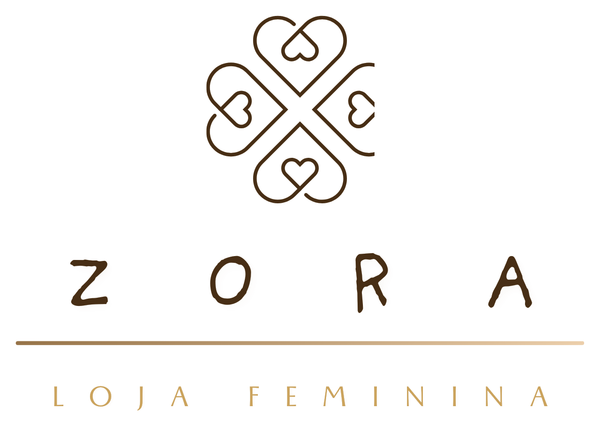

01 / INTEGRANTE · Nº 27
Rafael Nunes da Costa
Técnico em Informática · ETE Santa Cruz
Co-autor da Zora, loja online de moda feminina que integra vendas, estoque, financeiro e gestão de usuários em um só sistema.
Loja online de moda feminina desenvolvida por três estudantes como Projeto Final do curso Técnico em Informática da ETE Santa Cruz.
Conheça a equipe
Rafael, Kauã e Apolo, autores do projeto final 3210.
Técnico em Informática · ETE Santa Cruz
Co-autor da Zora, loja online de moda feminina que integra vendas, estoque, financeiro e gestão de usuários em um só sistema.
Técnico em Informática · ETE Santa Cruz
Co-autor da Zora, loja online de moda feminina que integra vendas, estoque, financeiro e gestão de usuários em um só sistema.

Técnico em Informática · ETE Santa Cruz
Co-autor da Zora, loja online de moda feminina que integra vendas, estoque, financeiro e gestão de usuários em um só sistema.
Sem um sistema estruturado, uma loja online sofre com estoque descontrolado, pedidos difíceis de acompanhar, falhas na gestão financeira e informações espalhadas. A Zora nasceu para centralizar tudo isso.
Ao concluir uma compra, o sistema registra o pedido, processa o pagamento e atualiza o estoque automaticamente, atendendo tanto o cliente, que busca uma compra simples e segura, quanto o gerente, que administra o negócio.
Navega pela loja, compra com segurança e acompanha tudo o que pediu.
Administra a operação da loja com informações centralizadas.
Escola Técnica Estadual Santa Cruz, Fundação de Apoio à Escola Técnica do Rio de Janeiro.
Orientadora do projeto. Avaliação da banca: Profa. Luciana do Amaral Teixeira.
Requisito parcial para o título de Técnico em Informática. Rio de Janeiro, 2026.
Veja requisitos, casos de uso, regras de negócio e diagrama de classes da Zora no visualizador integrado à página.